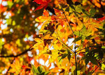
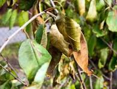
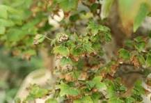
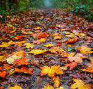
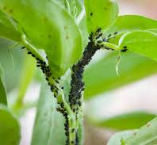
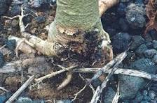
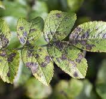
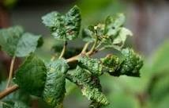
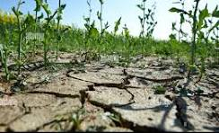
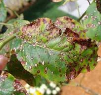

Common Plant Issues and Solutions
1. Yellowing Leaves

Yellowing leaves can indicate several issues:
- Overwatering: Check the soil moisture. If it's soggy, reduce watering.
- Nutrient Deficiency: Consider fertilizing with a balanced fertilizer.
- Insufficient Light: Move the plant to a brighter location.
2. Wilting Leaves

Wilting leaves can be a sign of stress:
- Underwatering: Check the soil; if it's dry, give the plant a good drink.
- Overwatering: If the soil is wet, allow it to dry out before watering again.
- Temperature Stress: Ensure the plant is in a suitable temperature range.
3. Brown Leaf Tips

Brown tips on leaves can indicate:
- Low Humidity: Increase humidity around the plant using a humidifier or pebble tray.
- Over-fertilization: Flush the soil with water to remove excess salts.
- Water Quality: Use filtered or distilled water if your tap water is high in minerals.
4. Leaf Drop

Leaf drop can be caused by various factors:
- Sudden Temperature Changes: Avoid placing plants near drafts or heat sources.
- Overwatering or Underwatering: Check soil moisture and adjust your watering schedule.
- Stress from Repotting: Give the plant time to adjust after repotting.
5. Pests

Pests can cause significant damage to plants:
- Aphids: Use insecticidal soap or neem oil to treat infestations.
- Spider Mites: Increase humidity and use a miticide if necessary.
- Mealybugs: Remove them with a cotton swab dipped in alcohol.
6. Root Rot

Root rot is a serious condition caused by overwatering:
- Symptoms: Yellowing leaves, wilting, and a foul smell from the soil.
- Solution: Remove the plant from its pot, trim away the rotten roots, and repot in fresh, well-draining soil.
- Prevention: Ensure pots have drainage holes and allow the soil to dry out between waterings.
7. Fungal Infections

Fungal infections can manifest as spots or mold:
- Symptoms: Brown or black spots on leaves, mold on the soil surface.
- Solution: Remove affected leaves and improve air circulation around the plant. Use a fungicide if necessary.
- Prevention: Avoid overhead watering and ensure good airflow.
8. Leaf Curling

Leaf curling can indicate stress or pest issues:
- Causes: Underwatering, overwatering, or pest infestations.
- Solution: Check soil moisture and inspect for pests. Adjust care as needed.
9. Stunted Growth

Stunted growth can be frustrating:
- Causes: Poor soil quality, lack of nutrients, or insufficient light.
- Solution: Fertilize with a balanced fertilizer and ensure the plant is receiving adequate light.
10. Leaf Spots

Leaf spots can be caused by various factors:
- Causes: Fungal infections, bacterial infections, or water droplets on leaves that cause sunburn.
- Solution: Remove affected leaves and treat with appropriate fungicides or bactericides.
- Prevention: Water at the base of the plant and avoid wetting the leaves.